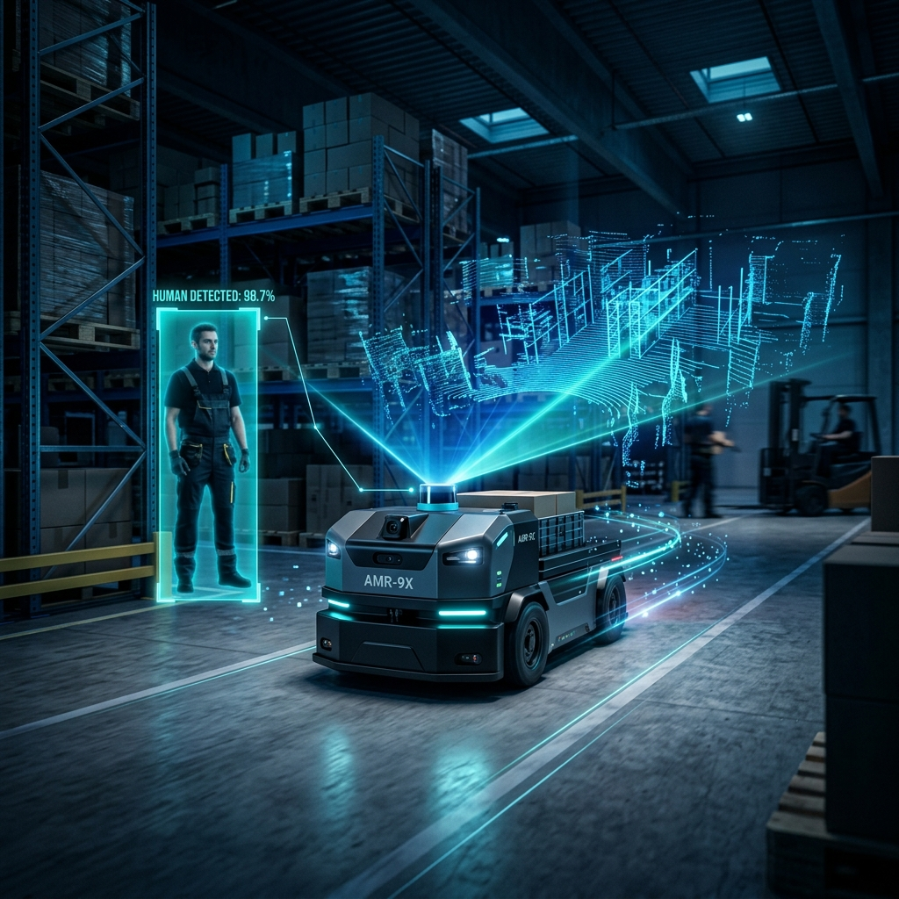
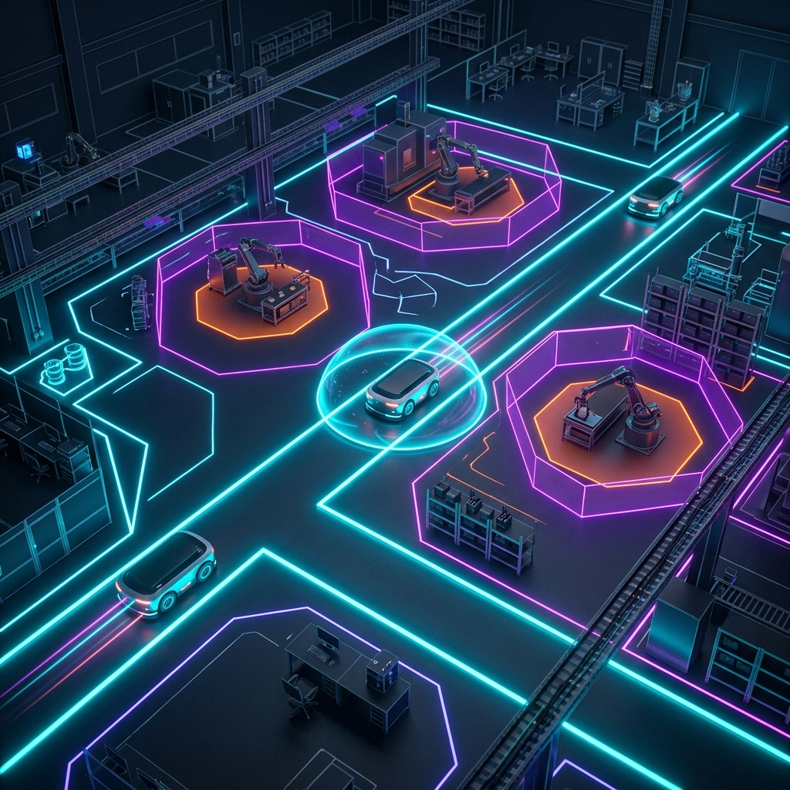
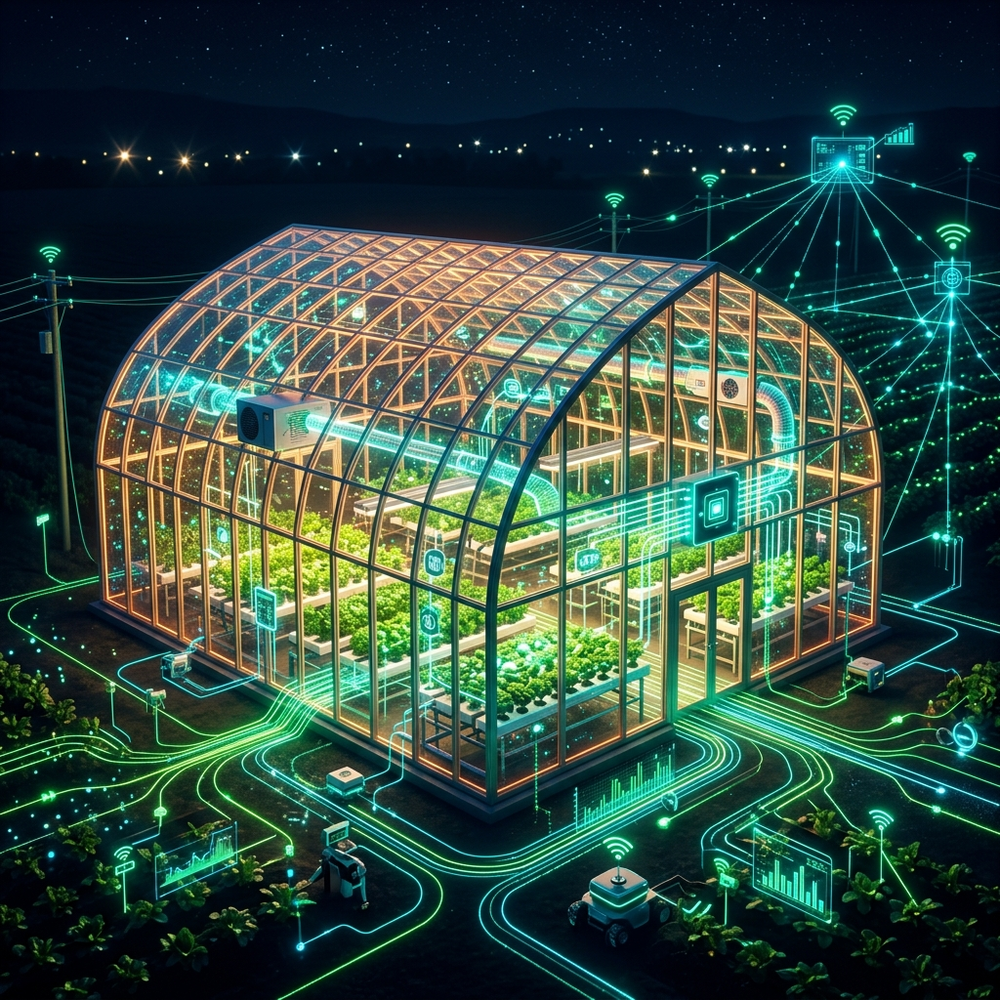

Hi, I'm Sowjanya
Research Scientist focused on Industrial Automation, Industrial IoT, Digital Twins, and Data Spaces. Bridging the gap between production floors and scalable cloud ecosystems.
Experience
Research Scientist, IT Systems
- I developed applied research demonstrators that transformed industrial digitalization concepts into working software prototypes for smart manufacturing, digital twins, and sustainable production systems.
- I designed and implemented IT/OT data pipelines that connected industrial machines, sensors, databases, backend services, and frontend applications to enable real-time production data usage.
- I built backend and frontend applications to collect, process, visualize, and manage machine, production, quality, and sustainability data in industrial research environments.
- I worked with Asset Administration Shells, semantic data models, metadata standards, and data-space concepts to create interoperable digital representations of industrial assets and production data.
- I transformed raw machine and sensor data into structured datasets for dashboards, machine learning workflows, digital twin applications, and Product Carbon Footprint calculations.
- I contributed to industrial system architecture by defining data flows, system components, integration interfaces, technology stacks, and deployment concepts.
- I integrated production systems and research demonstrators using OPC UA, InfluxDB, Grafana, Docker, FA³ST, BaSyx, Python, Flask, Vue, and Next.js.
- I collaborated with interdisciplinary research teams, industry partners, and technical stakeholders to translate research requirements into scalable software and data solutions.
- I contributed to requirement analysis, technical documentation, experiment planning, stakeholder communication, and project coordination for publicly funded and industry-oriented research projects.
- I worked across the full prototype development lifecycle, from use-case definition and architecture design to implementation, testing, integration, and final demonstration.
Working Student, Smart Building IoT
- Developed end-to-end IoT data workflows for smart building and industrial monitoring, enabling sensor data to be collected, processed, and visualized.
- Built Azure-based data handling workflows to collect, process, and structure sensor data.
- Created Grafana dashboards for real-time visualization of environmental conditions and sensor trends.
Intern, IoT Edge Software
- Implemented over-the-air software rollout for IoT edge devices, enabling remote updates via Bosch IoT Suite.
- Developed standardized MQTT-based edge-to-cloud communication workflows for software-updatable IoT devices.
- Built software-updatable device feature models using Eclipse Vorto and Hawkbit.
Working Student, Embedded Software
- Developed STM32 firmware for laboratory automation and liquid-handling technology products.
- Designed and tested circuit boards using Altium 365, Altium Designer, and LTspice.
- Utilized Git and AWS context to support integrated hardware and software engineering workflows.
Featured Projects
DigiBattPro 4.0 - Dynamic PCF & Battery Passport
Implemented digital twin use cases connecting battery production data, dynamic Product Carbon Footprint (PCF) calculation, and data-space concepts.
Problem Statement
- ▹ Battery cell production requires better transparency across process data, product data, energy consumption, and sustainability information.
- ▹ Product Carbon Footprint calculations are often static, manual, and disconnected from real production data.
- ▹ Battery lifecycle information is distributed across different systems, which makes traceability, reporting, and reuse of production data difficult.
- ▹ A Digital Battery Passport needs both static product information and dynamic production data to support future sustainability, traceability, and regulatory requirements.
My Contribution
- ▹ I developed a Dynamic PCF demonstrator for battery cell production by connecting production data, energy sensor data, backend services, and PCF calculation logic.
- ▹ I implemented software components for collecting and structuring production-related data from battery manufacturing processes.
- ▹ I worked on the integration of Asset Administration Shell concepts and FA³ST Service to represent battery-related data in a standardized digital twin structure.
- ▹ I contributed to the development of a Battery Passport MVP that combines static battery master data with dynamic production data, process parameters, and Product Carbon Footprint results.
- ▹ I designed the concept for a searchable battery database where produced battery cells can be identified and linked to their lifecycle, production, and sustainability information.
- ▹ I supported the architecture design for connecting digital twin components, PCF data, production data, and passport-related information into one demonstrator workflow.
Results / Impact
- ▹ Created a working demonstrator concept for dynamic Product Carbon Footprint calculation in battery cell production.
- ▹ Enabled structured access to battery-specific production, process, and sustainability data through a Digital Battery Passport approach.
- ▹ Improved traceability by linking produced battery cells with production data, PCF information, and lifecycle-relevant metadata.
- ▹ Demonstrated how AAS-based digital twin technologies can support Battery Passport use cases and sustainability reporting.
- ▹ Contributed to DigiBattPro 4.0 goals by supporting data-driven, transparent, and sustainable battery production.
KI Data Platform - AAS & DCAT-AP Harvester
Developed workflows for an AI data platform to give manufacturing companies secure, structured access to production data spaces.
- The Challenge: Transforming highly complex, industrial Asset Administration Shell (AAS) models into discoverable datasets for modern metadata catalogues like Piveau.
- The Solution: Built an AAS-to-DCAT harvester workflow that queries FA3ST AAS registries, dynamically maps them to DCAT-AP/JRC-compatible metadata, and publishes them.
- Results: Successfully demonstrated the end-to-end AAS upload to the data platform for industry partners, enabling seamless data discoverability for Manufacturing-X.
ExELPro - AI-supported Experiment Management
Problem Statement
- ▹ Battery cell experiments generate data across multiple machines, PLCs, databases, and manual documentation tools. Because this data is often scattered, it is difficult to track experiments, link process parameters with quality results, and prepare reliable datasets for AI-based process optimization.
My Contribution
- ▹ I developed the data acquisition workflow for battery production experiments by connecting Beckhoff TwinCAT and Siemens S7-based automation systems with SmartUnifier, OPC UA, InfluxDB, and the Experiment Management System.
- ▹ I built data pipelines to collect, structure, clean, and export machine, process, quality, and experiment metadata from live production runs.
- ▹ I transformed raw time-series data into ML-ready datasets for process analysis, parameter optimization, and AI-supported experiment evaluation.
- ▹ I supported troubleshooting and integration of PLC data access, OPC UA variables, SmartUnifier configuration, and data recording during live lab experiments.
- ▹ I contributed to project coordination by aligning technical requirements, experiment schedules, data availability, and communication between lab teams and project partners.
Results
- ▹ Enabled structured and reusable data collection from battery production experiments.
- ▹ Improved the availability of production data for dashboards, analysis, and machine learning workflows.
- ▹ Supported the transition from manual experiment documentation toward a connected and data-driven experiment management process.
- ▹ Contributed to AI-supported optimization of battery production parameters and reduction of experimental effort.
H2Giga / FRHY - AAS Wrapper & Time-Series Abstraction
Designed an AAS abstraction layer that converts InfluxDB time-series and event data into standardized IDTA Time Series Submodels.
- The Challenge: Raw machine/service data from emulators appears in disparate formats, protocols, and update cycles, making it difficult for dashboards or AAS GUIs to query without a common model.
- The Solution: Built an AAS wrapper and abstraction layer connecting InfluxDB time-series data with BaSyx, using event triggers (Xetics) to automate data collection.
- Results: Successfully transformed emulator-generated data into standardized, queryable IDTA Time Series Submodels for easy integration.
FFB Lab Hub - Digital Twin Laboratory
Developed requirements and application concepts for a Next.js-based FFB Lab Hub digital twin connecting room overview, device booking, LIMS, ELN, and dashboards.
- The Challenge: Laboratory services and connected systems (LIMS, ELN, dashboards) were disconnected, lacking a central overview for checking room/device availability and documentation.
- The Solution: Developed a digital twin architecture that coordinates and links existing systems rather than duplicating measurement data, using a modular Next.js application framework.
- Results: Created a cohesive UI architecture connecting device booking, SOPs, and safety data, significantly improving accessibility to lab resources.
Manufacturing-X - Cross-border PCF Exchange
Developed a PCF calculation and exchange concept supporting dynamic product carbon footprint calculation across organizational boundaries.
- The Challenge: Exchanging dynamic product carbon footprint (PCF) and sustainability data securely across organizational and country boundaries in an automotive supply chain.
- The Solution: Designed a data pipeline and demonstrator using Eclipse Dataspace Connector (EDC) to link shop-floor data with a PCF calculation service.
- Results: Established a reference architecture for sovereign cross-border sustainability data exchange, presented at the CCPT conference.

Human Detection for Autonomous Mobile Robots
Conducted in-depth research to build a real-time AI pipeline for human detection on AMRs in complex indoor logistics environments.
- The Challenge: Accurate human leg detection and tracking using noisy LIDAR point clouds while maintaining strict real-time performance.
- The Solution: Adapted a U-Net architecture specifically for LIDAR occupancy map images and utilized YOLOv5 on camera data for robust human classification.
- Results: Implemented a successful multi-sensor fusion approach. Developed a robust system to calculate the mass center directly from occupancy maps, enabling highly accurate localization.

Dynamic Geofence for Autonomous Mobile Robots
Designed a real-time safety application to manage dynamic risk zones for AMRs operating in shared indoor industrial environments.
- The Challenge: Managing concurrent data streams from multiple AMRs without lag, and dynamically rendering reliable safety boundaries on the fly.
- The Solution: Developed a novel approach based on computational geometry. Built a monitoring application using Vue.js, Flask, MQTT, and SQLite.
- Results: Overcame concurrency issues by implementing a real-time caching system using thread-safe data structures, establishing a verifiable safety case for AMR operations.

Smart Farming using HVAC and IoT
Created an end-to-end IoT automation prototype designed to modernize environmental control in farming scenarios.
- The Challenge: Reliably transmitting data from distributed sensors and translating that raw data into automated, intelligent HVAC control decisions.
- The Solution: Integrated multiple sensors connected to a Raspberry Pi, leveraging MQTT for robust data transfer. Engineered an interactive Dash web application.
- Results: Successfully implemented a PDDL AI planner that autonomously evaluated sensor inputs to make smart decision-making protocols and drive actuator control.